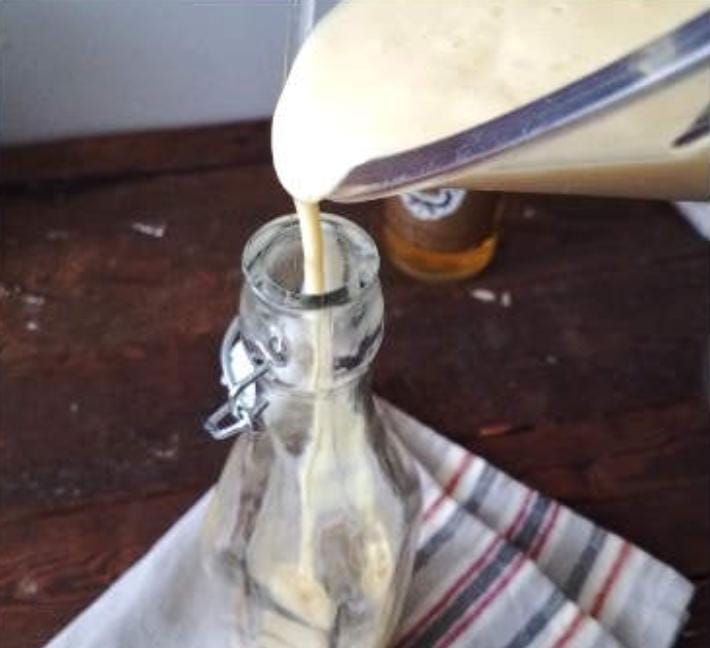

Ingredientes
- Leche Condensada 395 gr
- Flan 1 caja
- Leche Liquída 1 litro
- Yemas de huevo 2 unidades
- Rama de Canela 1 o 2 unidades
- Esencia de Vainilla 1 cdta
- Ron 1 1/2 taza
Procedimiento
- En la licuadrora agregar el contenido de la caja de flan, la leche,
las 2 yemas, el azucar y la esencia de vainilla - Poner en una olla a fuego bajo la mezcla y las 2 ramas de canela
- Revolver constantemente para evitar que se pegue hasta que comience
a hervir - Retirar del fuego y dejar reposar
- Agregar la mezcla ya fria en la licuadora con el ron y la leche condensada,
licuar hasta que esten bien mezclados - Dejar reposar y embotellar
- Mantaner en el refrigerador, servir y disfrutar


